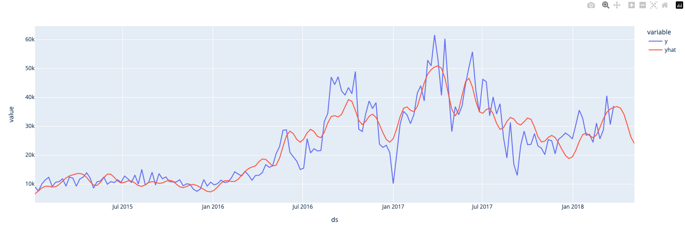
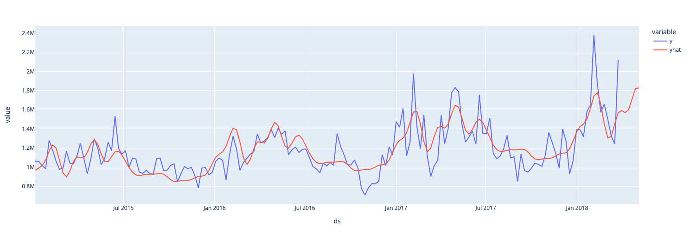

Utilising Prophet with PySpark¶
In this notebook, we look at how to use a popular machine learning library prophet with the pyspark architecture. pyspark itself unfortunatelly does not contain such an additive regression model, however we can utilise user defined functions, UDF, which allows us to utilise different functionality of different libraries that is not available in pyspark
asa
Background¶
Prophet¶
Prophet is a time series forecasting model. It is based on an additive regression model that takes into account trends, seasonality, and holidays. Prophet also allows for the inclusion of external regressors and can handle missing data and outliers. It uses Bayesian inference to estimate the parameters of the model and provides uncertainty intervals for the forecasts. Such a model is not available in the pyspark library, so we'll need to utilise user defined functions to utilise it with our dataset!
UDF¶
Pandas UDFs (User-Defined Functions) are one form of UDF that is available in pyspark. They allow you to apply a Python function that operates on pandas dataframes to Spark dataframes. This allows you to leverage the power of pandas, which is a popular data manipulation library in Python, in your PySpark applications. Pandas UDFs can take one or more input columns and return one or more output columns, which can be of any data type supported by Spark. With Pandas UDFs, you can perform complex data manipulations that are not possible using built-in Spark SQL functions.
Of course, this is not a guide on UDF, nor are we going for the most optimal setup, it is simply an example of how we can use the rich user defined functionality of pyspark to integrate other functionalities not available in pyspark
Avocado Price Prediction¶
Avocado price prediction is the process of using machine learning algorithms to forecast the future prices of avocados based on historical data and other relevant factors such as weather patterns, consumer demand, and supply chain disruptions. This can help stakeholders in the avocado industry make informed decisions about when and where to sell their avocados, as well as how much to charge for them. Avocado price prediction can also provide insights into the factors that affect avocado sales and help optimize the industry's efficiency and profitability.
The Dataset¶
It is a well known fact that Millenials LOVE Avocado Toast. It's also a well known fact that all Millenials live in their parents basements.Clearly, they aren't buying home because they are buying too much Avocado Toast! But maybe there's hope… if a Millenial could find a city with cheap avocados, they could live out the Millenial American Dream.
The dataset can be found on Kaggle & its original source found here, it contains historical sales data for different avocado types in various states the United States
Loading data¶
To load the data, we start a spark session on our local machine
! pip install pyspark
from pyspark.sql import SparkSession
import pyspark.sql.functions as f
import pandas as pd
# Start spark session
spark = SparkSession.builder\
.master("local")\
.appName("prophet")\
.getOrCreate()
To read the data, we'll use the session.read.csv, together with inferSchema method and look at the table schematics using printSchema() method to automatically assign types to table columns
# read csv
sales = spark.read.csv('/kaggle/input/avocado-prices/avocado.csv',header=True,inferSchema=True)
sales.printSchema()
root
|-- _c0: integer (nullable = true)
|-- Date: date (nullable = true)
|-- AveragePrice: double (nullable = true)
|-- Total Volume: double (nullable = true)
|-- 4046: double (nullable = true)
|-- 4225: double (nullable = true)
|-- 4770: double (nullable = true)
|-- Total Bags: double (nullable = true)
|-- Small Bags: double (nullable = true)
|-- Large Bags: double (nullable = true)
|-- XLarge Bags: double (nullable = true)
|-- type: string (nullable = true)
|-- year: integer (nullable = true)
|-- region: string (nullable = true)
Exploring Data¶
As with any dataset, its good to get a better understanding by exploring the data you are working with. Having loaded our data, first lets take a peek at our dataset,
Let's use select,orderBy & show methods to show our dataset
+----------+------------+------------+----------------+
| Date| type|Total Volume| region|
+----------+------------+------------+----------------+
|2015-01-04|conventional| 116253.44|BuffaloRochester|
|2015-01-04|conventional| 158638.04| Columbus|
|2015-01-04|conventional| 5777334.9| California|
|2015-01-04|conventional| 435021.49| Atlanta|
|2015-01-04|conventional| 166006.29| Charlotte|
+----------+------------+------------+----------------+
The Date unique values can be called and checked, we have weekly data for different regions
+----------+
| Date|
+----------+
|2015-01-04|
|2015-01-11|
|2015-01-18|
|2015-01-25|
|2015-02-01|
+----------+
only showing top 5 rows
It's also good to know the range of the date of our dataset
+----------+----------+
| last| first|
+----------+----------+
|2018-03-25|2015-01-04|
+----------+----------+
We will be using Total Volume as our target variable we'll be predicting. We also can note that we have different types type of avocados (organic and conventional)
So what we'll be doing is creating a model to predict the sales for both of these types, which is something we'll need to incorporate into our UDF
We can also check the region limits for Total Volume, we can do this by using agg method with the groupby dataframe type (pyspark.sql.group.GroupedData):
# min and maximum of sale volume
sales.groupby('region').agg(f.max('Total Volume')).show() # get max of column
sales.groupby('region').agg(f.min('Total Volume')).show() # get min of column
+------------------+-----------------+
| region|max(Total Volume)|
+------------------+-----------------+
| PhoenixTucson| 2200550.27|
| GrandRapids| 408921.57|
| SouthCarolina| 706098.15|
| TotalUS| 6.250564652E7|
| WestTexNewMexico| 1637554.42|
| Louisville| 169828.77|
| Philadelphia| 819224.3|
| Sacramento| 862337.1|
| DallasFtWorth| 1885401.44|
| Indianapolis| 335442.41|
| LasVegas| 680234.93|
| Nashville| 391780.25|
| GreatLakes| 7094764.73|
| Detroit| 880540.45|
| Albany| 216738.47|
| Portland| 1189151.17|
| CincinnatiDayton| 538518.77|
| SanDiego| 917660.79|
| Boise| 136377.55|
|HarrisburgScranton| 395673.05|
+------------------+-----------------+
only showing top 20 rows
+------------------+-----------------+
| region|min(Total Volume)|
+------------------+-----------------+
| PhoenixTucson| 4881.79|
| GrandRapids| 683.76|
| SouthCarolina| 2304.3|
| TotalUS| 501814.87|
| WestTexNewMexico| 4582.72|
| Louisville| 862.59|
| Philadelphia| 1699.0|
| Sacramento| 3562.52|
| DallasFtWorth| 6568.67|
| Indianapolis| 964.25|
| LasVegas| 2988.4|
| Nashville| 2892.29|
| GreatLakes| 56569.37|
| Detroit| 4973.92|
| Albany| 774.2|
| Portland| 7136.88|
| CincinnatiDayton| 6349.77|
| SanDiego| 5564.87|
| Boise| 562.64|
|HarrisburgScranton| 971.81|
+------------------+-----------------+
only showing top 20 rows
We can note that we have data for not only the different regions, but also for the entire country TotalUS. Also interesting to note is that the difference in max and min values is quite high.
Let's find the locations (region) with the highest total volumes
from pyspark.sql.functions import desc,col
by_volume = sales.orderBy(desc("Total Volume"))\
.where(col('region') != 'TotalUS')
by_volume.show(5)
+---+----------+------------+-------------+----------+----------+---------+----------+----------+----------+-----------+------------+----+----------+
|_c0| Date|AveragePrice| Total Volume| 4046| 4225| 4770|Total Bags|Small Bags|Large Bags|XLarge Bags| type|year| region|
+---+----------+------------+-------------+----------+----------+---------+----------+----------+----------+-----------+------------+----+----------+
| 47|2017-02-05| 0.66|1.127474911E7|4377537.67|2558039.85|193764.89| 4145406.7|2508731.79|1627453.06| 9221.85|conventional|2017| West|
| 47|2017-02-05| 0.67|1.121359629E7|3986429.59|3550403.07|214137.93| 3462625.7|3403581.49| 7838.83| 51205.38|conventional|2017|California|
| 7|2018-02-04| 0.8|1.089467777E7|4473811.63|4097591.67|146357.78|2176916.69|2072477.62| 34196.27| 70242.8|conventional|2018|California|
| 7|2018-02-04| 0.83|1.056505641E7|3121272.58|3294335.87|142553.21|4006894.75|1151399.33|2838239.39| 17256.03|conventional|2018| West|
| 46|2016-02-07| 0.7|1.036169817E7|2930343.28|3950852.38| 424389.6|3056112.91|2693843.02| 344774.59| 17495.3|conventional|2016|California|
+---+----------+------------+-------------+----------+----------+---------+----------+----------+----------+-----------+------------+----+----------+
only showing top 5 rows
We can note that California & West regions have had the highest values for Total Volume on 2017-02-05
Its also interest to note the difference in Total Volume for both types of avocado, so lets check that, lets just check the difference in max values
+------------+-----------------+
| type|max(Total Volume)|
+------------+-----------------+
| organic| 793464.77|
|conventional| 1.127474911E7|
+------------+-----------------+
So we can note that tehre is a significant diffence in Total Volume, let's also check when this actually occured:
by_volume.filter(f.col('Total Volume') == 1.127474911E7).show()
by_volume.filter(f.col('Total Volume') == 793464.77).show()
+---+----------+------------+-------------+----------+----------+---------+----------+----------+----------+-----------+------------+----+------+
|_c0| Date|AveragePrice| Total Volume| 4046| 4225| 4770|Total Bags|Small Bags|Large Bags|XLarge Bags| type|year|region|
+---+----------+------------+-------------+----------+----------+---------+----------+----------+----------+-----------+------------+----+------+
| 47|2017-02-05| 0.66|1.127474911E7|4377537.67|2558039.85|193764.89| 4145406.7|2508731.79|1627453.06| 9221.85|conventional|2017| West|
+---+----------+------------+-------------+----------+----------+---------+----------+----------+----------+-----------+------------+----+------+
+---+----------+------------+------------+--------+---------+-----+----------+----------+----------+-----------+-------+----+---------+
|_c0| Date|AveragePrice|Total Volume| 4046| 4225| 4770|Total Bags|Small Bags|Large Bags|XLarge Bags| type|year| region|
+---+----------+------------+------------+--------+---------+-----+----------+----------+----------+-----------+-------+----+---------+
| 5|2018-02-18| 1.39| 793464.77|150620.0|425616.86|874.9| 216353.01| 197949.51| 18403.5| 0.0|organic|2018|Northeast|
+---+----------+------------+------------+--------+---------+-----+----------+----------+----------+-----------+-------+----+---------+
Let's also check how many regions there actually are:
Which is interesting as there are only 50 states in the US, so perhaps west is a summation for all states on the west coast, lets check if there is also an east coast
+-------------------+-----+
| region|count|
+-------------------+-----+
| PhoenixTucson| 338|
| GrandRapids| 338|
| SouthCarolina| 338|
| TotalUS| 338|
| WestTexNewMexico| 335|
| Louisville| 338|
| Philadelphia| 338|
| Sacramento| 338|
| DallasFtWorth| 338|
| Indianapolis| 338|
| LasVegas| 338|
| Nashville| 338|
| GreatLakes| 338|
| Detroit| 338|
| Albany| 338|
| Portland| 338|
| CincinnatiDayton| 338|
| SanDiego| 338|
| Boise| 338|
| HarrisburgScranton| 338|
| StLouis| 338|
| NewOrleansMobile| 338|
| Columbus| 338|
| Pittsburgh| 338|
| MiamiFtLauderdale| 338|
| SouthCentral| 338|
| Chicago| 338|
| BuffaloRochester| 338|
| Tampa| 338|
| Southeast| 338|
| Plains| 338|
| Atlanta| 338|
|BaltimoreWashington| 338|
| Seattle| 338|
| SanFrancisco| 338|
|HartfordSpringfield| 338|
| Spokane| 338|
| NorthernNewEngland| 338|
| Roanoke| 338|
| LosAngeles| 338|
| Houston| 338|
| Jacksonville| 338|
| RaleighGreensboro| 338|
| West| 338|
| NewYork| 338|
| Syracuse| 338|
| California| 338|
| Orlando| 338|
| Charlotte| 338|
| Midsouth| 338|
| Denver| 338|
| Boston| 338|
| Northeast| 338|
| RichmondNorfolk| 338|
+-------------------+-----+
So as the name suggests, its a grouping that doesn't actually correspond to states, but rather are some general zones, mostly city specific regions, however we also have Northeast, West,Midsouth & SouthCentral regions.
Let's check how many values we have for each region
+------------------+-----+
| region|count|
+------------------+-----+
| WestTexNewMexico| 335|
| PhoenixTucson| 338|
| GrandRapids| 338|
| SouthCarolina| 338|
| TotalUS| 338|
| Louisville| 338|
| Philadelphia| 338|
| Sacramento| 338|
| DallasFtWorth| 338|
| Indianapolis| 338|
| LasVegas| 338|
| Nashville| 338|
| GreatLakes| 338|
| Detroit| 338|
| Albany| 338|
| Portland| 338|
| CincinnatiDayton| 338|
| SanDiego| 338|
| Boise| 338|
|HarrisburgScranton| 338|
+------------------+-----+
only showing top 20 rows
Looks like we mostly have 338 historical data points for each region, except for WestTexNewMexico.
Turning our attention to only one region, let's check how the Houston region has been performing.
+---+----------+------------+------------+---------+---------+---------+----------+----------+----------+-----------+------------+----+-------+
|_c0| Date|AveragePrice|Total Volume| 4046| 4225| 4770|Total Bags|Small Bags|Large Bags|XLarge Bags| type|year| region|
+---+----------+------------+------------+---------+---------+---------+----------+----------+----------+-----------+------------+----+-------+
| 0|2015-12-27| 0.78| 944506.54|389773.22|288003.62|126150.81| 140578.89| 73711.94| 36493.62| 30373.33|conventional|2015|Houston|
| 1|2015-12-20| 0.75| 922355.67|382444.22|278067.11|127372.19| 134472.15| 72198.16| 31520.66| 30753.33|conventional|2015|Houston|
| 2|2015-12-13| 0.73| 998752.95| 412187.8|386865.21| 81450.04| 118249.9| 69011.01| 48622.22| 616.67|conventional|2015|Houston|
| 3|2015-12-06| 0.74| 989676.85|368528.91| 490805.0| 7041.19| 123301.75| 61020.31| 62281.44| 0.0|conventional|2015|Houston|
| 4|2015-11-29| 0.79| 783225.98|391616.95|289533.68| 4334.89| 97740.46| 67880.28| 29860.18| 0.0|conventional|2015|Houston|
| 5|2015-11-22| 0.73| 913002.96|402191.51|391110.76| 6924.43| 112776.26| 70785.25| 41991.01| 0.0|conventional|2015|Houston|
| 6|2015-11-15| 0.72| 998801.78|530464.33|332541.11| 4611.0| 131185.34| 62414.66| 68770.68| 0.0|conventional|2015|Houston|
| 7|2015-11-08| 0.75| 983909.85|427828.16|411365.91| 20404.29| 124311.49| 56573.89| 67737.6| 0.0|conventional|2015|Houston|
| 8|2015-11-01| 0.77| 1007805.74| 395945.0|365506.02|111263.81| 135090.91| 56198.27| 78892.64| 0.0|conventional|2015|Houston|
| 9|2015-10-25| 0.88| 933623.58|437329.85|313129.29| 81274.85| 101889.59| 57577.21| 44260.6| 51.78|conventional|2015|Houston|
| 10|2015-10-18| 0.9| 847813.12| 436132.2|242842.91| 80895.03| 87942.98| 59835.83| 28107.15| 0.0|conventional|2015|Houston|
| 11|2015-10-11| 0.79| 1036269.51|410949.18|385629.69|126765.96| 112924.68| 62638.13| 50286.55| 0.0|conventional|2015|Houston|
| 12|2015-10-04| 0.82| 1019283.99|411727.49|435388.05| 43558.15| 128610.3| 59751.0| 68859.3| 0.0|conventional|2015|Houston|
| 13|2015-09-27| 0.86| 968988.09|383218.43| 458982.9| 16780.9| 110005.86| 61098.51| 48907.35| 0.0|conventional|2015|Houston|
| 14|2015-09-20| 0.83| 967228.05|417701.88|445473.03| 6959.5| 97093.64| 55198.32| 41895.32| 0.0|conventional|2015|Houston|
| 15|2015-09-13| 0.89| 1095790.27|421533.83|540499.39| 5559.36| 128197.69| 55636.91| 72560.78| 0.0|conventional|2015|Houston|
| 16|2015-09-06| 0.89| 1090493.39|460377.08|495487.54| 6230.7| 128398.07| 63724.96| 64673.11| 0.0|conventional|2015|Houston|
| 17|2015-08-30| 0.88| 926124.93| 559048.7|260761.33| 4514.17| 101800.73| 72264.6| 29536.13| 0.0|conventional|2015|Houston|
| 18|2015-08-23| 0.89| 933166.17|509472.17| 321616.5| 4323.68| 97753.82| 62733.47| 35020.35| 0.0|conventional|2015|Houston|
| 19|2015-08-16| 0.92| 968899.09|565965.79|297434.65| 3479.25| 102019.4| 65764.02| 36255.38| 0.0|conventional|2015|Houston|
+---+----------+------------+------------+---------+---------+---------+----------+----------+----------+-----------+------------+----+-------+
Preparing data for modeling¶
Since we don't have any missing data points for the Houston region, let's use it for our model example, let's define a subset houston_df, which will contain only avocado sales data for the Houston region
Let's select only the relevant features which will be used to train our model
houston_df = houston_df.groupBy(['Region','type','Date']).agg(f.sum('Total Volume').alias('y'))
houston_df.show(5)
+-------+------------+----------+----------+
| Region| type| Date| y|
+-------+------------+----------+----------+
|Houston|conventional|2016-03-06|1091432.18|
|Houston|conventional|2017-02-05|1977923.65|
|Houston|conventional|2018-02-04|2381742.59|
|Houston| organic|2015-05-24| 12358.51|
|Houston| organic|2017-07-23| 40100.89|
+-------+------------+----------+----------+
only showing top 5 rows
# change column datatype
houston_df = houston_df.withColumn('y',f.round('y',2))
houston_df = houston_df.withColumn('ds',f.to_date('Date'))
houston_df_final = houston_df.select(['Region','type','ds','y'])
houston_df_final.show(4)
+-------+------------+----------+----------+
| Region| type| ds| y|
+-------+------------+----------+----------+
|Houston|conventional|2016-03-06|1091432.18|
|Houston|conventional|2017-02-05|1977923.65|
|Houston|conventional|2018-02-04|2381742.59|
|Houston| organic|2015-05-24| 12358.51|
+-------+------------+----------+----------+
only showing top 4 rows
As we will be utilising prophet, we can define the different settings of features we will be utilising in the modeling process, like weekly_seasonality and yearly_seasonality, we don't really need to explicitly create features by ourselves. For this study, we'll limit ourselves with these features provided in module.
Creating a model¶
Defining Scheme¶
Like any UDF, we need to define the output type of our data, let's prepare the data format scheme for the outputs of our UDF. We will need to use StructType and the relevant type improted from sql.types
import pyspark.sql.types as ty
schema = ty.StructType([
ty.StructField('Region', ty.StringType()), # our main features
ty.StructField('type', ty. StringType()), #
ty.StructField('ds', ty.TimestampType()), #
ty.StructField('y', ty.FloatType()), #
ty.StructField('yhat', ty.DoubleType()),
ty.StructField('yhat_upper', ty.DoubleType()),
ty.StructField('yhat_lower', ty.DoubleType()),
])
UDF¶
Our UDF will be slightly involved than our typical UDF, we will be using PandasUDFType.GROUPED_MAP so it should be called with groupby & apply
PandasUDFType.GROUPED_MAPis a type of user-defined function (UDF) in PySpark that allows for the application of a Pandas function to each group of data within a Spark DataFrame. This UDF type is useful when working with grouped data, such as when aggregating data by a certain column or grouping data by time intervals.
from prophet import Prophet
from pyspark.sql.functions import pandas_udf, PandasUDFType
@pandas_udf(schema, PandasUDFType.GROUPED_MAP)
def apply_model(store_pd):
# instantiate the model and set parameters
model = Prophet(
interval_width=0.1,
growth='linear',
daily_seasonality=False,
weekly_seasonality=True,
yearly_seasonality=True,
seasonality_mode='multiplicative'
)
# fit the model to historical data
model.fit(store_pd)
# Create a data frame that lists 90 dates starting from Jan 1 2018
future = model.make_future_dataframe(
periods=6,
freq='w',
include_history=True)
# Out of sample prediction
future = model.predict(future)
# Create a data frame that contains store, item, y, and yhat
f_pd = future[['ds', 'yhat', 'yhat_upper', 'yhat_lower']].copy()
st_pd = store_pd[['ds', 'Region','y']].copy()
f_pd.loc[:,'ds'] = pd.to_datetime(f_pd['ds'])
st_pd.loc[:,'ds'] = pd.to_datetime(st_pd['ds'])
result_pd = f_pd.join(st_pd.set_index('ds'), on='ds', how='left')
result_pd.loc[:,'Region'] = store_pd['Region'].iloc[0]
result_pd.loc[:,'type'] = store_pd['type'].iloc[0]
return result_pd[['Region','type', 'ds', 'y', 'yhat',
'yhat_upper', 'yhat_lower']]
Training process¶
Our model setup will be the following hyperparameters:
model = Prophet(
interval_width=0.1,
growth='linear',
daily_seasonality=False,
weekly_seasonality=True,
yearly_seasonality=True,
seasonality_mode='multiplicative'
)
Having fitted the model on our data (which runs from 2015-01-04 to 2018-03-25), we'll be making a prediction using model.make_future_dataframe, in which we'll be specifying that we want to make a prediction for 6 weeks in advanced, setting the model prediction parameters. Then we simply call model.predict to actually make the prediction.
To create models for both region (which in our case will only be Houston) & type (organic & convensional), we'll call the apply method for the pyspark dataframe
+-------+------------+-------------------+----------+------------------+------------------+------------------+
| Region| type| ds| y| yhat| yhat_upper| yhat_lower|
+-------+------------+-------------------+----------+------------------+------------------+------------------+
|Houston|conventional|2015-01-04 00:00:00| 1062990.6| 967605.2625150415| 987966.9732773455| 952305.7433327858|
|Houston|conventional|2015-01-11 00:00:00| 1062071.6| 993363.6182296885| 995012.7884165086| 964197.9475039787|
|Houston|conventional|2015-01-18 00:00:00| 1017854.2| 1015966.900950469|1025256.0703683371| 986191.4013155274|
|Houston|conventional|2015-01-25 00:00:00| 983910.94| 1074995.886186154|1101222.7673731335| 1062121.771442082|
|Houston|conventional|2015-02-01 00:00:00| 1280364.0|1167900.5325763628| 1188681.132535528| 1145180.90581613|
|Houston|conventional|2015-02-08 00:00:00| 1180723.0|1232065.4408061658|1239550.0307806057|1198043.2132719166|
|Houston|conventional|2015-02-15 00:00:00| 1062387.8|1199450.2180199602|1223060.5212891083|1176312.1838248386|
|Houston|conventional|2015-02-22 00:00:00| 978807.75|1073369.2242733259|1080957.9300315154|1040938.8331911729|
|Houston|conventional|2015-03-01 00:00:00| 991328.44| 941094.8884144317| 959840.4691880762| 919962.6290055071|
|Houston|conventional|2015-03-08 00:00:00| 1166055.9| 898815.9800298921| 918134.9334112646| 880629.0129257607|
|Houston|conventional|2015-03-15 00:00:00|1043172.75| 962628.9504384592| 984672.2940272797| 941114.615399528|
|Houston|conventional|2015-03-22 00:00:00|1036663.75|1059573.4445409325|1079371.1160897035|1042058.3879815078|
|Houston|conventional|2015-03-29 00:00:00| 1116225.2|1108114.6730682629| 1128250.035336084| 1084141.715137374|
|Houston|conventional|2015-04-05 00:00:00| 1249645.2|1100408.8290516583| 1116313.220982885| 1080221.717887945|
|Houston|conventional|2015-04-12 00:00:00| 1096075.0|1098549.7905255936|1117497.0118921385|1076220.1122365214|
|Houston|conventional|2015-04-19 00:00:00| 933033.2| 1153840.801604051|1185673.7940084708|1142908.6811052496|
|Houston|conventional|2015-04-26 00:00:00| 1082231.9|1242221.1196405245| 1269836.200588267|1229695.3593816601|
|Houston|conventional|2015-05-03 00:00:00| 1296308.0|1287101.4463574803|1309988.6590584682| 1264268.574431952|
|Houston|conventional|2015-05-10 00:00:00| 1201673.1|1241601.8571321142|1263813.3510391738|1222570.1340492044|
|Houston|conventional|2015-05-17 00:00:00|1025659.56| 1139019.362908239|1164737.2354728119|1124616.7852877746|
+-------+------------+-------------------+----------+------------------+------------------+------------------+
only showing top 20 rows
Model Prediction Visualisation¶
Now to visualise the results, lets do some preparation
import pyspark.pandas as ps
organic_data = results.filter(f.col('type')=='organic').pandas_api()
organic_data = organic_data.set_index(['ds'])
conventional_data = results.filter(f.col('type')=='conventional').pandas_api()
conventional_data = conventional_data.set_index(['ds'])
Let's visualise the organic subset model predictions

And now the convensional subset model

Concluding remarks¶
In this post we looked how to utilise pyspark together with a common time series prediction library prophet. We achieved this with the use of pyspark user defined functionality which it offers to allow us to continue working with pyspark dataframe inputs. Of course such functionality would result in performance drops when using large datasets, so it must be used with caution, especially pandas UDF. Our goal was to do some data exploration with pyspark & predict the total required volume of avocadoes for 6 weeks in advanced, for two different types of avocados and for the Houston region. We used the entire available dataset without any validation techniques to confirm the accuracy of our prediction, so that is something you can definitely try out next, validation of models is of course very important!
Thank you for reading!
Any questions or comments about the above post can be addressed on the mldsai-info channel or to me directly shtrauss2, on shtrausslearning or shtrausslearning